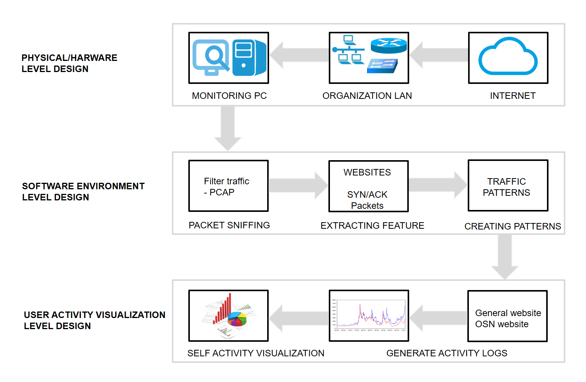

EMP-Feedback system
The use of online social networking services is considerably more accessible today due to advances in ICT in workplaces. Employees are spending more time on Internet engaging in non-work-related activities, such as maintaining personal networks, interacting with friends, streaming music and video, checking sports scores and following Web bookmarks by visiting various online social venues. As such, organizations are increasingly concerned about maintaining a stable workforce, and thus they make the use of monitoring systems. However, the current monitoring practices violate employees’ reasonable expectation of privacy, decrease self-determination and cause employees to complain and possibly increase intent to quit jobs. We present the use of passive monitoring in the workplace as a new tool to observe employees’ Internet activities with objective measures. Based on Self Quantified movement, we aim to design a system that can passively monitor employees, provide visualization feedback based on their Internet usage activities, and allow employees to understand the implications of their actions concerning the boundary between work-related and non-work related Internet activities.
The purpose of this research is to design a system that can passively monitor employees and provide persuasive visualization feedback based on their Internet usage activities. To this end, our proposed system has two sides: quantified self (QS) and passive monitoring. The QS approach has been used in a variety of tools to collect information exclusively intended for self-reflection and self-monitoring, with the aim of giving employees information about their personal behaviours, choices and lifestyles. This approach originated from the self-quantified movement – a new lifelogging research branch that aims to incorporate technology to acquire and collect information on different aspects of people’s daily lives. On the other hand, passive monitoring can capture user activities passively and can be triggered without the user being directly contacted, involved or requested to take action. As a way to join these two aspects, this study presents the design of an employee feedback system as a new QS tool that can be used to help employers improve their employees’ productivity.
This project presents the promising use of passive monitoring in the workplace that observes employees’ Internet activities using objective measures. This project furthers the design of an employee feedback system as a new QS tool in the field of quantified self-movement. The purpose is to introduce a new paradigm shift in the employee monitoring field, because the current excessive and unreasonable monitoring systems often have a negative impact on employee productivity. Moreover, subjective monitoring practices in organizations invade employees’ reasonable expectation of privacy, decrease self-determination, cause employees to complain and possibly increase employees’ intent to quit, leading them to act stealthily in their respective compartments when conducting personal activities. This can also cause employees to fear even doing work-related activities.
|  |
This research acknowledged that passive monitoring of real-time Internet traffic is worthy to generate persuasive feedback for employees because it doesn’t need to be installed or configured on each employee’s computer, and most importantly it isn’t based on subjective monitoring. This represents an improvement because most monitoring systems have to be installed and configured on each computer, and employees may be able to control or modify the configurations. The proposed system allows employees to see instant feedbacks on their Internet usage, keeping them focused on work-related activities and discouraging criminal or immoral usage behaviour. The advantages of online social networks shouldn’t, however, be ignored, including business significance and information sharing for both employees and organizations, which, in the end, may enhance performance and productivity. Therefore, parental control and strict rules over the use of online social networks in organizations can be problematic. Nevertheless, this use still needs to be reduced.
This research found a significant amount of use of OSNs along with general website usage by the participants. The amount of use of general websites may include work-related activities; however, the consistent usage of OSNs may have a negative impact on the performance of employees’ work-related activities. The amount of time employees spend on the use of OSNs per day should be a matter of concern for any organization. It cannot be ignored that organizations, being the owners of the equipment used, have the right to ask for an adequate level of performance and good results and can expect the best return on their investment. There may be some employees using social media for knowledge and experience sharing with their counterparts, but this cannot be generalized and can still be achieved in proper and effective ways if the management of employees’ social network activities exist.
A real-time Internet traffic classification using ML techniques has enabled a variety of applications in a variety of areas, such as quality of service, security and intrusion detection in the network. The method of classifying Internet traffic in the proposed system has implications for educational institutes, which can allow them to identify traffic related to various OSN services. They can put some constraints on the use of such services for students to increase their study and research performance.
This research contributes to the QS movement field by providing a new QS tool and provides a direction to researchers seeking to quantify the massive use of OSN as an abnormal human function by developing novel techniques and digital devices under the umbrella of QS movement. Future work will be conducted to design different presentation methods, such as direct feedback via SMS/message, social peer pressure, explicit incentives and ambient visualization displays to observe the influence of the methods on employees. However, more research is needed to truly understand the effect of monitoring on employees, including how they approach their work-related tasks and their attitudes towards the organization.
This research is supported by the Ministry of Education and National Research Foundation of the Republic of Korea (NRF-2015S1A5A8010614). The work is also supported by the Promotion of Special Design-Technology Convergence Graduate School of Korea Institute of Design Promotion with a grant from Ministry of Trade, Industry & Energy of the Republic of Korea (N0001436).